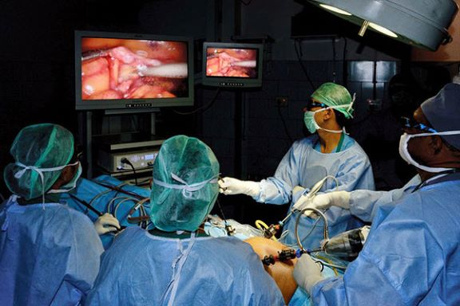

Our Services
Laparoscopic Surgery
We specialise in Laparoscopy surgeries. A Laparoscopic Surgery is done through one or more small incisions, using small tubes and tiny cameras and surgical instruments.
Learn moreLaparoscopy Hands-On Training

Physicians/Surgeons will at their own pace and leisure learn, improve upon and become proficient in basic Laparoscopic skills. The center has Laparoscopic boxes which will be individually assigned to each surgeon.
Learn morePig Mimic Lab

The Pig Lab is a mimic of a real Laparoscopy suite. Here, Surgeons will use live pigs to further hone in on their skills prior to doing the procedure on a real person.
Learn more